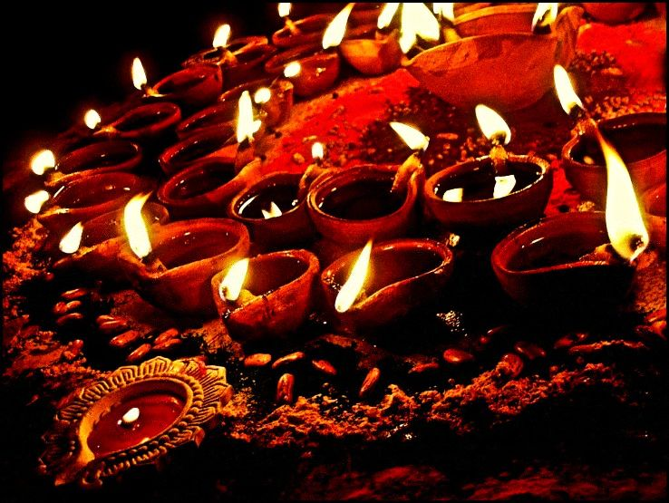
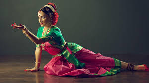

Welcome to the Cultural Heart of India
India's culture is a blend of centuries of rule, traditions, and diversity. From the ancient Vedic period to the Mughal empire, British colonial rule, and modern independence, each phase added layers of uniqueness.
Cultural Highlights

Spiritual Temples
From Kashi Vishwanath to Meenakshi Temple, India’s temples are architectural and spiritual marvels.

Vibrant Festivals
Whether it’s Diwali or Holi, every Indian festival is a celebration of joy, color, and community.

Classical Dance
India’s dance forms like Bharatanatyam and Kathak express stories through graceful gestures and rhythm.
Did You Know?
India is the birthplace of 4 major world religions – Hinduism, Buddhism, Jainism, and Sikhism.